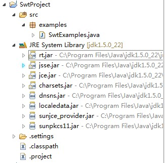

JRE System Library 简介 [Java] 10月 14日
Eclispe新建Java Project ，项目路径下有Jre System Library ,其实这些就是jdk的源码。
如图：

之前很少在意这个地方，写代码嘛，熟悉API 就行了。后来看到《黑客与画家》中写道，“要理解一件东西的边界，它能做到的和不能做到的”，大抵意思是这样的。
切入正题,这里主要介绍rt.jar，其实官方提供的API文档也是对这个jar包的说明。源码在jdk安装路径下的src.zip，解压即可。
java.*、javax.*包，org.*包：
- 1、作为J2SE的API公开接口的一部分，与操作系统无关可以在所有Java平台上运行；javax中如存在：AbstractScriptEngine ，提供了在java中调用js的API，这样易变的业务可以使用js脚本处理——《改善java代码的150个建议》
- 2、不同的jdk版本会保持兼容不会轻易变化，提供API文档及源码(src.zip)。在Eclipse中你可以为jre 的rt.jar 通过Source Attachment 添加jdk路径下的src.zip文件，这样就可以在IDE中查看jdk的源码了。当然，通过反编译插件也是可以的。
sun.*包：
- 1、不是API公开接口的一部分，调用sun包的程序并不能确保工作在所有Java平台上，不同的操作系统中的实现可能不相同。
- 2、不同的jdk版本sun包中的类也可能不定期的变化，因此sun.*包中的类没有提供API文档及源码。
注意：
台无关性是Java语言最大的优势之一，从技术上讲，并不能防止你的程序调用sun.*包中的类。在JDK版本的变迁当中，这些类可能会被删除或转移到其它包路径下，而且它的接口（包括名称、标签等）也很有可能发生变化，在这种情况下，即便你希望程序仅仅运行在SUN的实现平台下，你仍将承受新的版本给你的系统带来破坏的风险。总之，编写依赖于sun.*包的Java程序是不安全的，他们将变得无法移植、破坏了程序的平台无法性、也无法被JDK各版本所兼容。
jdk的源码，JVM，觉得满有必要研究下的。
comments powered by Disqus